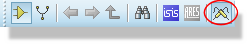
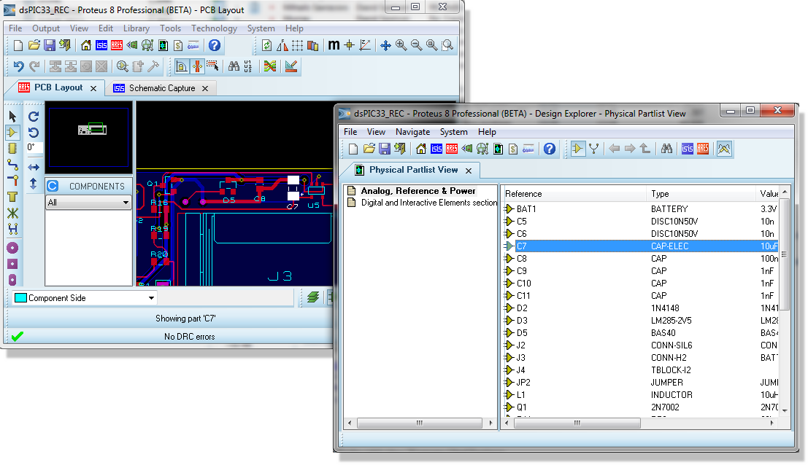
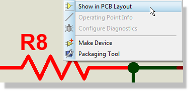
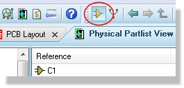
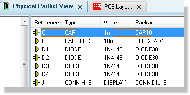
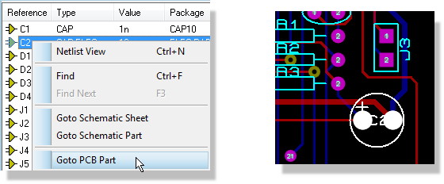
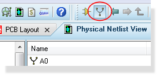
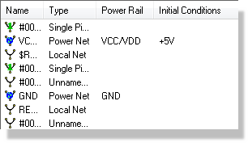
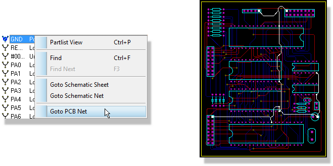

CROSS PROBING
Introduction
Cross-probing is a powerful technique for analysing and checking both your schematic and your PCB layout simultaneously. Essentially it allows you to take a schematic component and tag/zoom to the PCB footprint on the layout corresponding to that component. The Proteus design suite also enables you to look at a net on the schematic and highlight the same net on the PCB layout, thus allowing you to easily establish and check routing strategies and completeness.
Much of the cross-probing can be actioned directly from the application module you are working in (schematic vs layout) and/or you can work from within the Design Explorer. Where appropriate, we'll discuss both methods below.
Automatic Cross-Probing Mode (Design Explorer)
You can automate navigation to both schematic and layout modules by switching on the live cross-probing mode in the Design Explorer.

When enabled the clicking on an component in Design Explorer automatically tags the component part on the schematic and/or the footprint on the layout.
The difference between automatic mode and those described below is that there is no switch of tabs to the schematic and/or layout in automatic mode. The most useful way to cross-probe in this way is therefore to detach the design explorer from the frame containing the schematic/layout (drag the tab and drop it). With the design explorer is a separate frame you can then click on a component and view the corresponding schematic/layout.

Cross Probing to a Footprint
Direct from the Schematic
- Locate the component part that you want to cross-probe from.
- Right click and select 'Show in PCB Layout' from the resulting context menu.

Proteus will switch to (or launch) the Layout tab and navigate to the footprint corresponding to the component part on the schematic. Of course, if the footprint has not yet been placed on the layout not much will happen!
Design Explorer
To cross probe to a footprint on the Layout :
- Make sure that both the schematic and the layout modules are open, have the design/layout file loaded and that they are synchronised (that is, that all changes made on the schematic have been netlisted through to the layout).
- Launch the Design Explorer.

- Make sure that you are in Physical Parts View - this is shown on the title bar of the design explorer.

- The right hand pane should be displaying a listing of component parts on the current schematic sheet.

- Right click on the schematic part of interest within this pane and you should get a context menu with an option to 'Go to PCB Part'. Select this menu option and the layout module will both zoom to and highlight the footprint corresponding to the component you selected.

If the 'Go to PCB Part' option is grayed out then either the layout module is not open, doesn't have the layout corresponding to the open schematic loaded, or the schematic and PCB are out of sync (close design explorer, turn on live netlisting in the layout module and repeat from step 2 above).
The Design Explorer is a top level window which means that it can be minimised to the system tray. It will automatically detect when the schematic has changed and will close. This is required to ensure that the information displayed in the design explorer is entirely consistent with that on the schematic.
Cross Probing to a Net
To cross probe to a net in the layout:
- Repeat steps 1 & 2 in Design Explorer above.
- Use the net icon at the top left of the design explorer to switch into Physical Netlist View - this will be reflected on the title bar.

- The right hand pane will now be displaying a list of nets used in the schematic.

- Right click on the net of interest within this pane and you should get a context menu with an option to 'Go to PCB Net'. Select this menu option and the PCB Module will both zoom to and highlight the footprint corresponding to the component you selected.
